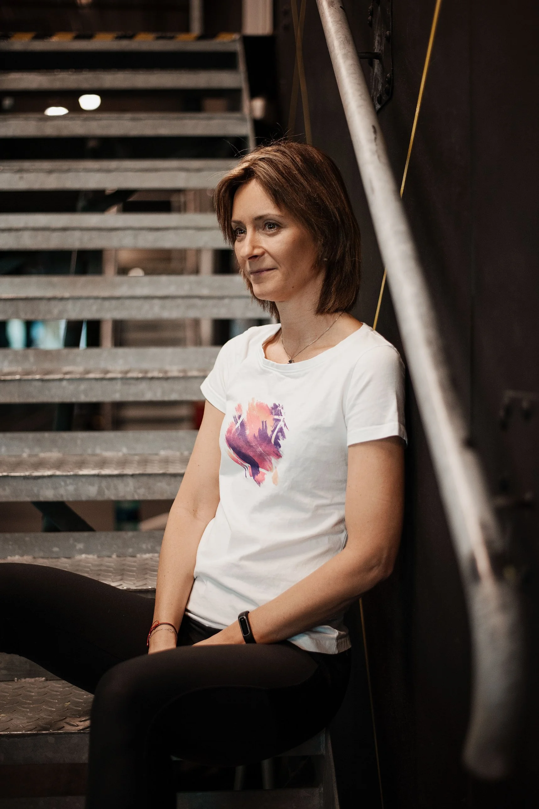
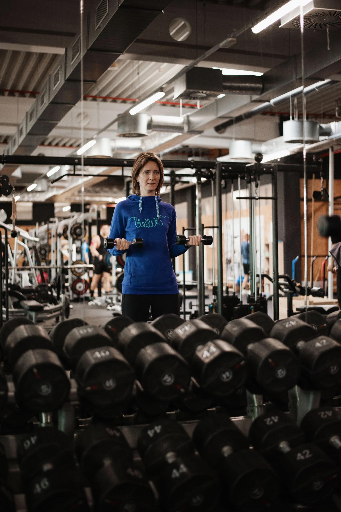
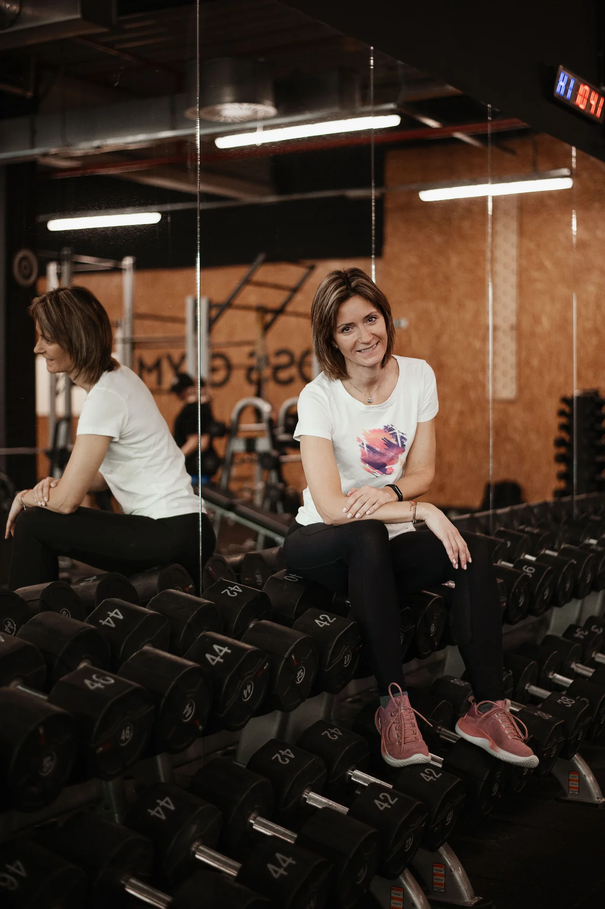
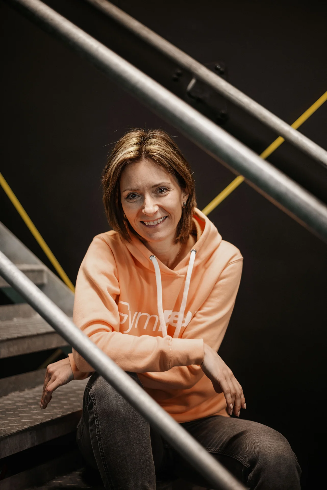
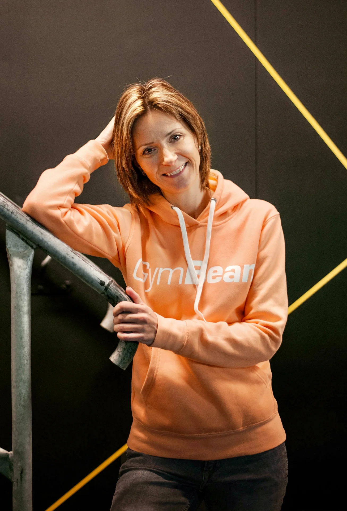

Kondice, síla a tvarování postavy
Chcete zlepšit fyzickou kondici, posílit svaly, pracovat na své postavě nebo se cítit silnější a zdatnější? Společně nastavíme trénink podle toho, čeho chcete dosáhnout.
Osobní trénink zaměřený na kondici, sílu a zdravý pohyb.
Osobním tréninkům se věnuji od roku 2003 a každý trénink přizpůsobuji konkrétnímu člověku.
Pomáhám lidem zlepšovat kondici, posilovat tělo a cítit se lépe. Při tréninku vycházím z toho, co právě potřebujete, ať už chcete pracovat na své postavě, začínáte cvičit, vracíte se po delší pauze nebo potřebujete zohlednit možnosti pohybu pro své tělo.

Každý máme jiné cíle.
Trénink by tomu měl odpovídat.
Pohyb je součástí mého života i práce. Osobním tréninkům se věnuji od roku 2003 a za tu dobu jsem poznala spoustu lidí s různými cíli, zkušenostmi i pohybovými možnostmi.
Baví mě hledat cestu, která dává smysl právě konkrétnímu člověku. Někdo chce zlepšit kondici a posílit, jiný potřebuje pomoci se začátky ve fitness nebo se postupně vrátit ke cvičení po zranění či operaci.
Vystudovala jsem střední a vyšší odbornou zdravotnickou školu v oboru Diplomovaná všeobecná sestra. Zdravotnické vzdělání propojuji s dlouholetými zkušenostmi z fitness a dalším odborným vzděláváním.
Při své práci se zaměřuji na správné pohybové návyky, vhodné zatížení a rozvoj síly, stability, mobility i celkové kondice.
Nejde mi o to, abyste cvičili jako někdo jiný. Chci, abyste našli způsob pohybu, který bude odpovídat vám a vašemu tělu.
Každý přichází s jinou představou o tom, co chce změnit nebo zlepšit. Proto při sestavování tréninku vycházím z vašich cílů, dosavadních zkušeností a aktuálních pohybových možností.
Chcete zlepšit fyzickou kondici, posílit svaly, pracovat na své postavě nebo se cítit silnější a zdatnější? Společně nastavíme trénink podle toho, čeho chcete dosáhnout.
Zaměřujeme se na správné provedení cviků, rozvoj síly, stability a mobility. Důležité je nejen to, co cvičíte, ale také jak vaše tělo pohyb zvládá.
Nevíte, jak začít, nebo si ve fitku zatím nejste jistí? Ukážu vám, jak pracovat s jednotlivými stroji, pomůckami i vlastní hmotností a jak správně provádět cviky.
Po úrazu, operaci nebo delší pohybové pauze může být návrat ke cvičení náročný. Trénink přizpůsobuji vašim aktuálním možnostem a podle potřeby také doporučením ošetřujících odborníků.
Sedavé zaměstnání, jednostranné zatížení nebo dlouhodobé pohybové návyky mohou ovlivnit způsob, jakým se pohybujete. Při tréninku se zaměřujeme na vhodné posilování, správné pohybové návyky a vyváženější zatížení těla.
Cvičení přizpůsobené jednotlivým obdobím těhotenství a návratu k pohybu po porodu. Věnuji se také problematice diastázy, posilování středu těla a vhodnému zapojení břišních svalů s ohledem na aktuální stav a možnosti ženy.
První setkání je především o tom, abychom se poznali, probrali vaše cíle a zjistili, co od společného tréninku očekáváte. Nemusíte mít žádné předchozí zkušenosti ani se na něj speciálně připravovat.
Co vás ke cvičení přivádí? Čeho chcete dosáhnout a jaké máte dosavadní zkušenosti? Probereme také zdravotní omezení a vše, co je potřeba při tréninku zohlednit.
Podle vaší situace se zaměříme na základní pohybové schopnosti, držení těla a provedení vybraných pohybů. Zjistíme, na co je vhodné se při tréninku zaměřit.
Seznámíte se s prostředím fitka, vyzkoušíme vhodné cviky a ukážeme si jejich správné provedení. Vše přizpůsobíme vašim možnostem a aktuální kondici.
Ujasníme si, na čem budeme pracovat, jak často má smysl trénovat a jak bude spolupráce vypadat.
Plán s ohledem na cíle, zkušenosti, časové možnosti a pohybové potřeby.
Tréninkový plán sestavuji po osobní konzultaci a diagnostice těla.
Praktický podklad podle cíle, běžného režimu, stravovacích zvyklostí, časových možností a preferencí.
Návrh jídelníčku není náhradou individuální nutriční péče při zdravotních potížích nebo léčebné dietě.
Poptat plán nebo jídelníček →Osobní tréninky probíhají po předchozí domluvě. Vstup do fitness centra není zahrnut v ceně.



Chcete začít cvičit, zlepšit kondici, sestavit tréninkový plán nebo se poradit, jak přizpůsobit pohyb svým potřebám?
Budu se těšit na setkání.
Daniela
